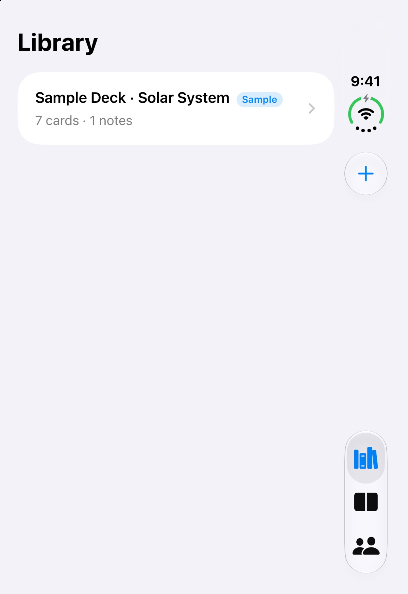
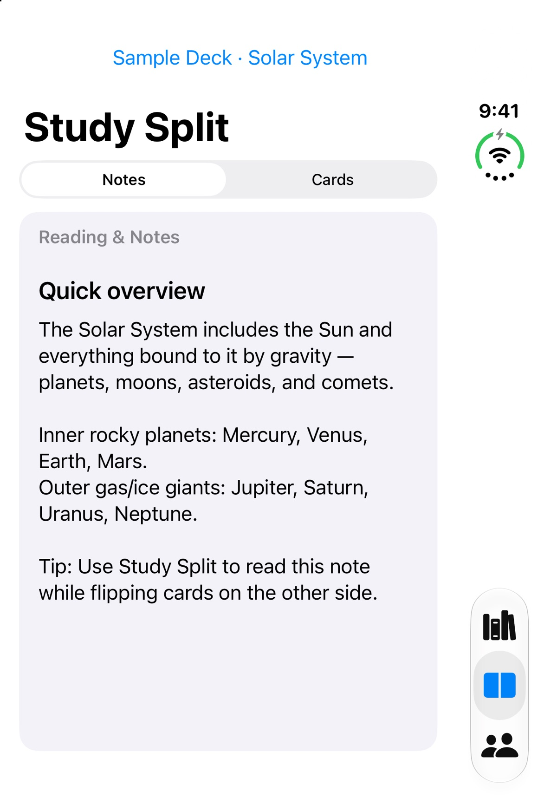
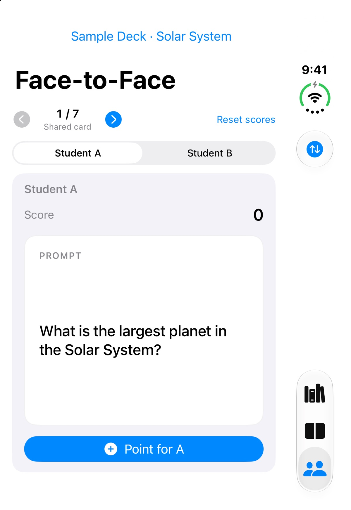
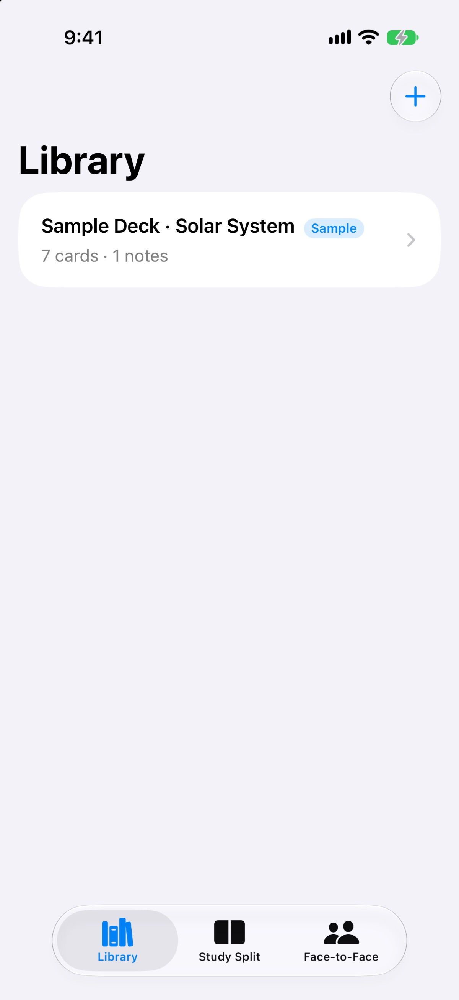
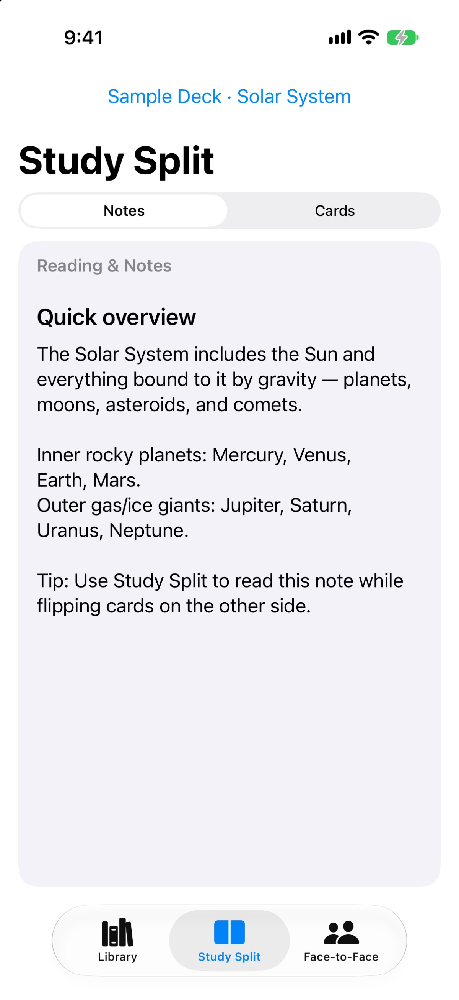

Studyfoldr
Notes beside flashcards. Two people, one phone.
An offline-first study app for iPhone Duo and iPhone. Decks, notes, and scores stay on the device — no account, no tracking, no ads, and no network required for the app’s features.
Works on iPhone Duo and iPhone

In the folder
Simulator captures of the running app. Honest shots — not mockups.
-

Study Split on iPhone Duo — Notes pane open on the Solar System overview. The app keeps notes beside flashcards via Notes/Cards panes (wide layouts when the display allows). -

Face-to-Face on iPhone Duo — Student A, card 1/7, score counter and Flip control visible. -

Library on iPhone — same decks, bottom tab bar. -

Study Split on iPhone — Notes pane; switch to Cards when you want to quiz.
What it does
The short list. Nothing padded.
-
Study Split
Keep notes beside flashcards. Read on one side, quiz on the other — Notes and Cards panes in one study view.
-
Face-to-Face Quiz
Two people quiz each other on one phone. Optional flip so the far pane reads upright from the other side, plus a simple score counter.
-
On-device library
Decks, cards, and notes live in a library on your phone. Browse and study without signing in.
-
Offline, no account
No cloud account, no tracking, no analytics, no ads. The app’s features do not need a network.